Konditoreikunst
Sahneschnitten & Sahnetorten
Unwiderstehliche Köstlichkeiten nach alter Konditoreikunst — luftig leicht und aromatisch frisch.
Luftig leicht und aromatisch frisch werden unsere Sahneschnitten mit viel Liebe gefertigt. Um Ihnen höchstmögliche Qualität zu garantieren, bitten wir bei Sahnetorten um Vorbestellung. Saisonale Variationen bringen stets neue Geschmackserlebnisse.
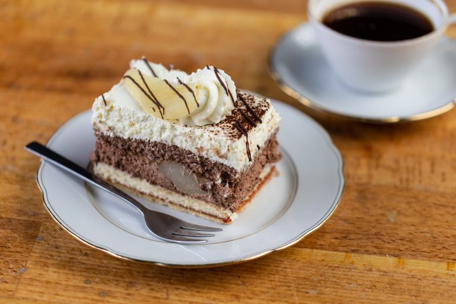
Himbeerschnitte
Ein leckerer Rührteigboden mit Himbeeren belegt. Einfach fruchtig und lecker!
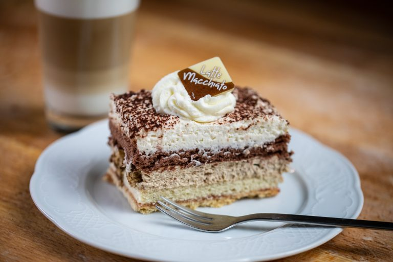
Erdbeersahnerolle
Lockerer, leichter Biskuit gefüllt mit einer fruchtigen Erdbeersahne.
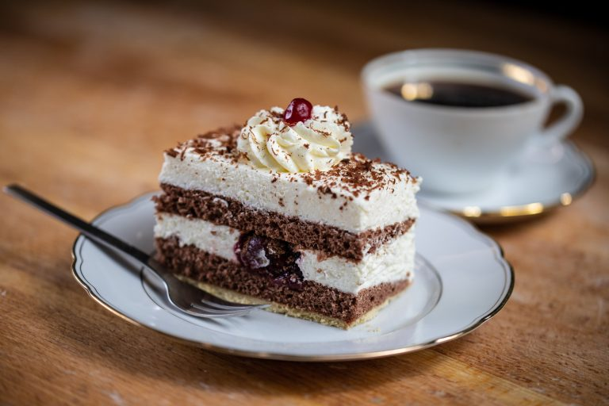
Obstschnitte
Rührteigboden mit Vanillecreme und Aprikosen, Birnen, Ananas, Kirschen und Kiwi belegt.
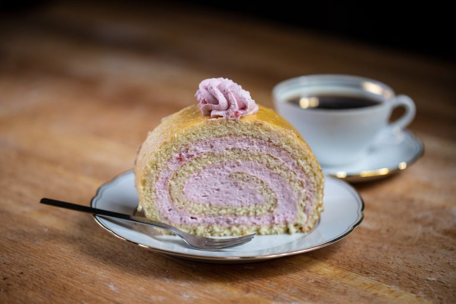
Haselnusssahneschnitte
Dunkler und heller Biskuitboden mit Nusssahne gefüllt und gehackten Haselnüssen bestreut.
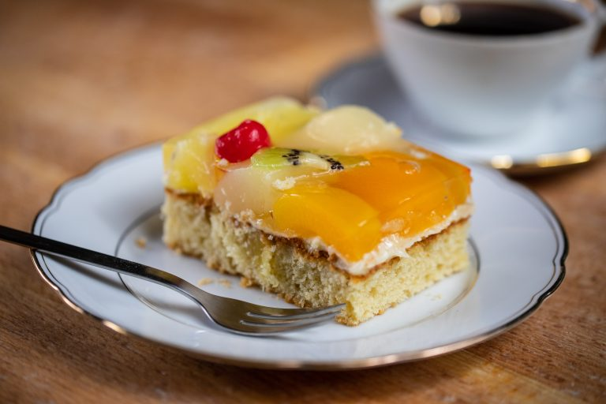
Heidelbeer-Joghurt
Rührteigboden mit Vanillegeschmack trifft auf Joghurtsahne mit Heidelbeerfruchtfüllung.
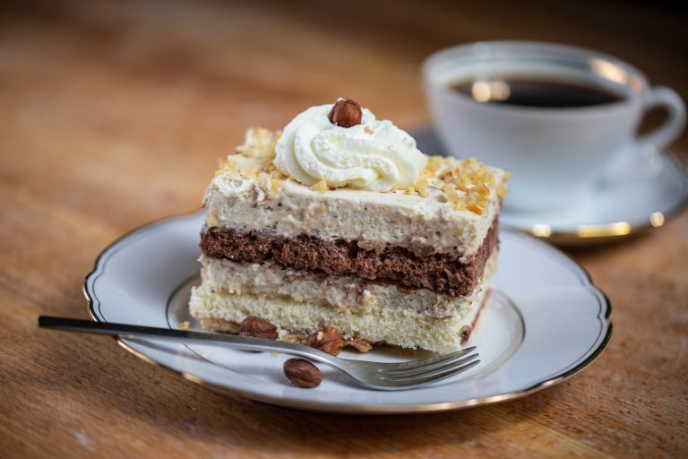
Schokosahneschnitte
Lockerer Schokoladenbiskuit gefüllt mit Schokosahne für echte Schoko-Fans.
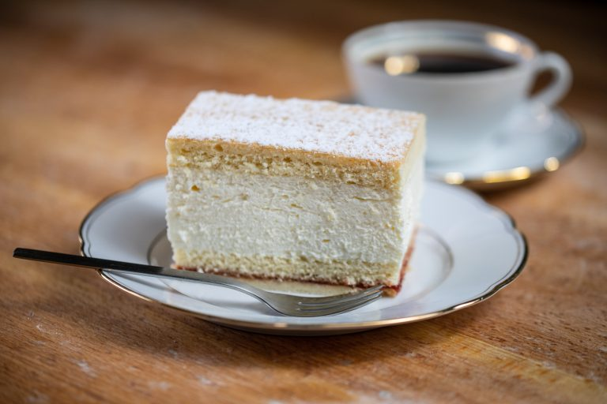
Schokobanane
Knackige Schokolade trifft auf Biskuit mit Creme und Bananen.
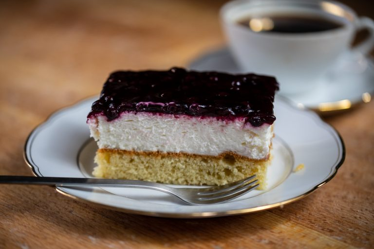
Schoko-Joghurt-Kirsch
Schokosandkuchen mit Kirschen gebacken und cremiger Joghurt-Käsemasse obendrauf.
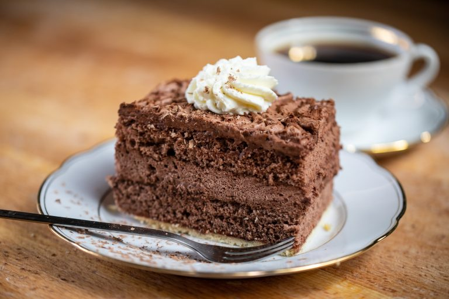
Irish-Coffee-Sahnerolle
Lockere Biskuitrolle mit Irish-Coffee-Sahne und Whiskey gefüllt.
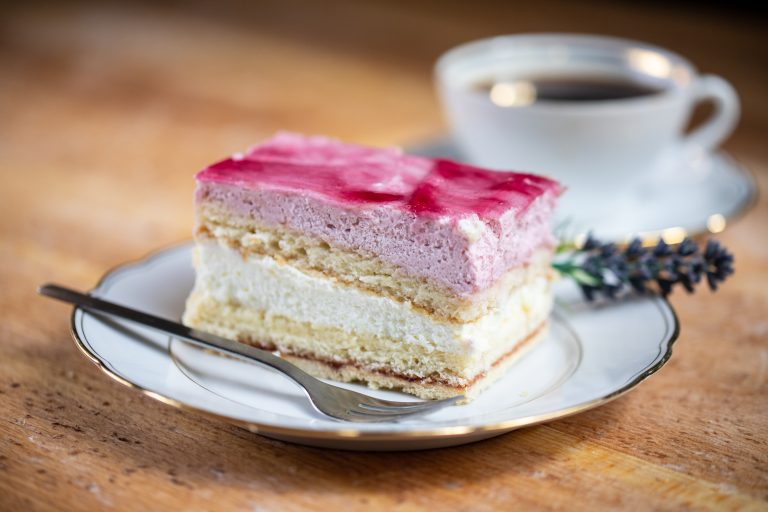
Gewürzschnitte
Leckerer Gewürzkuchen bestrichen mit feinster Kuvertüre.
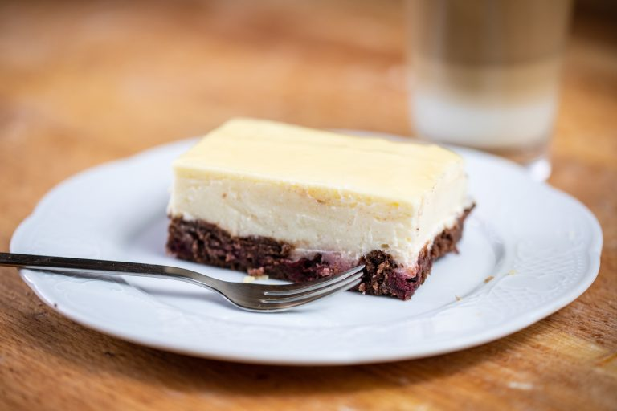
Erdbeerschnitte
Rührteigboden mit Erdbeeren auf dünner Puddingschicht belegt.
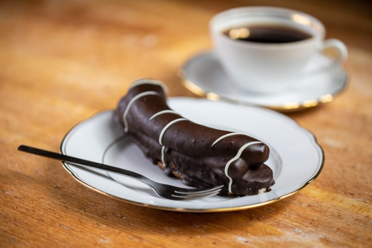
Erdbeer-Tiramisu
Einmal probiert, für immer verführt — unser Kundenliebling in der Erdbeersaison.
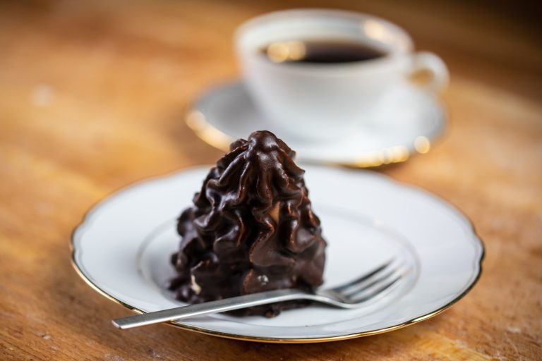
Latte Macchiato
Helle und dunkle Biskuitböden gefüllt mit Latte Macchiato-Sahne und Vanillesahne.
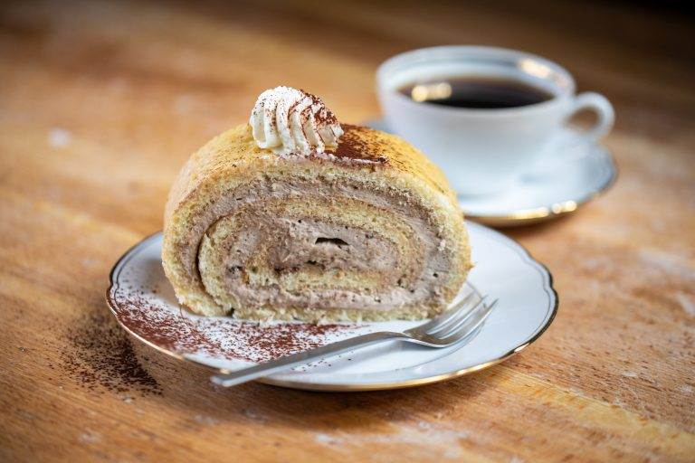
Granatsplitter
Aufgespritzt aus einer Creme mit hellen und dunklen Biskuitbröseln.
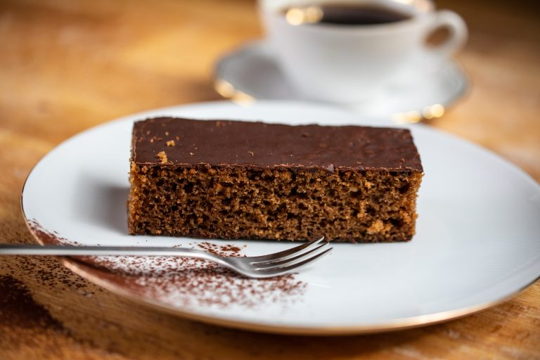
Schwarzwälder Kirsch
Dunkler Biskuitboden mit Kirschwassersahne und fruchtiger Kirschfüllung.
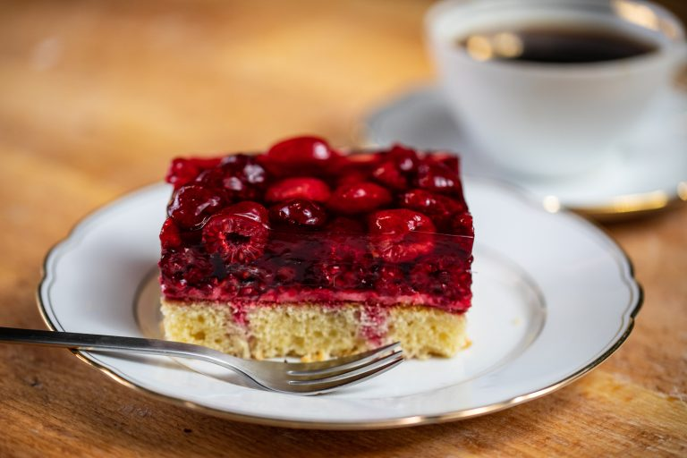
Frankfurter Kranz
Mehrere Schichten Biskuit gefüllt mit Buttercreme und Krokantstreusel.
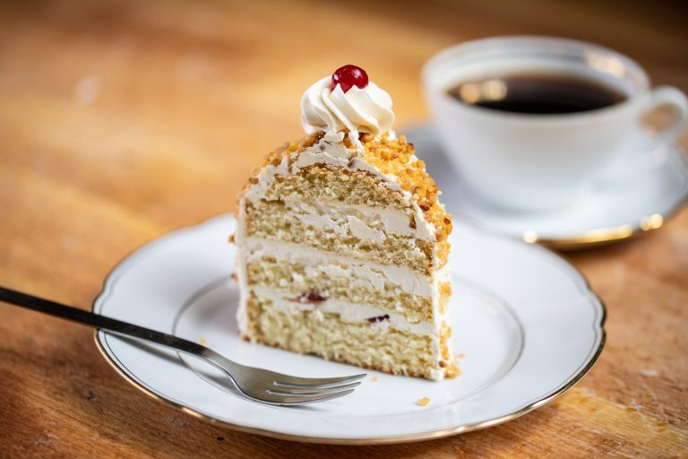
Holunder-Joghurt
Heller Biskuitboden gefüllt mit leichter Joghurtsahne und fruchtiger Holundersahne.
Besuchen Sie uns!
Unsere Sahneschnitten fertigen wir täglich frisch. Bei Sahnetorten bitten wir um Vorbestellung. Besuchen Sie uns in einer unserer Filialen!
Filialen & Öffnungszeiten